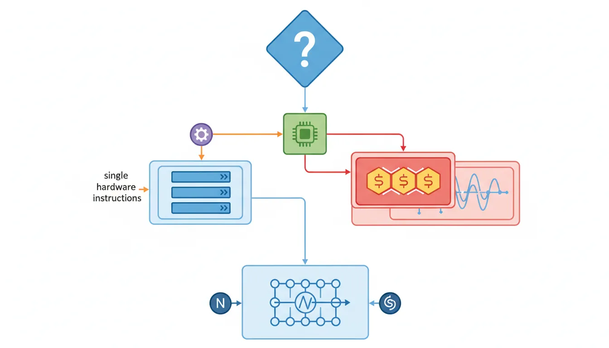
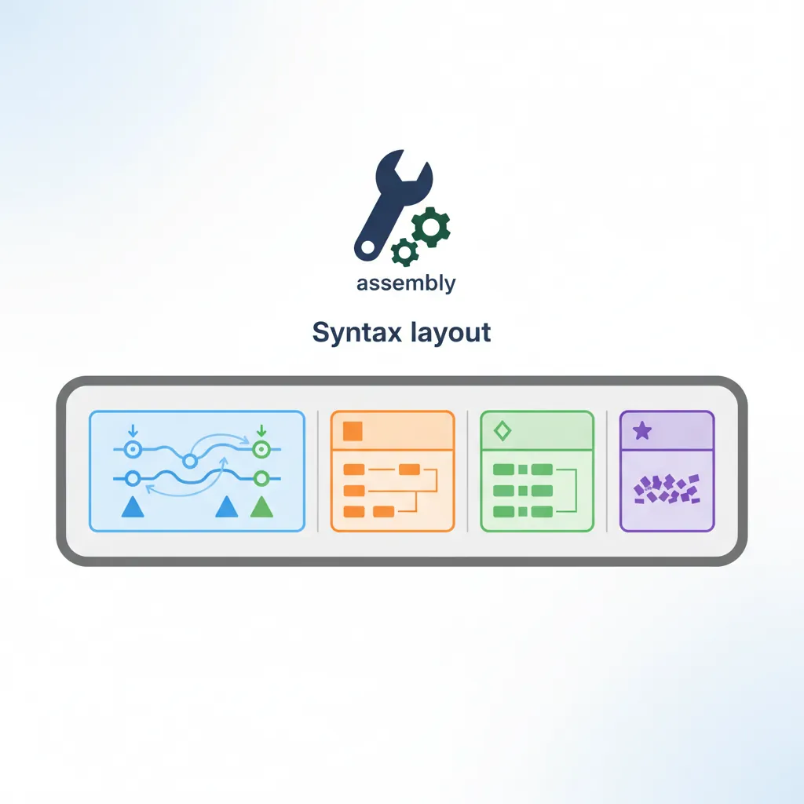
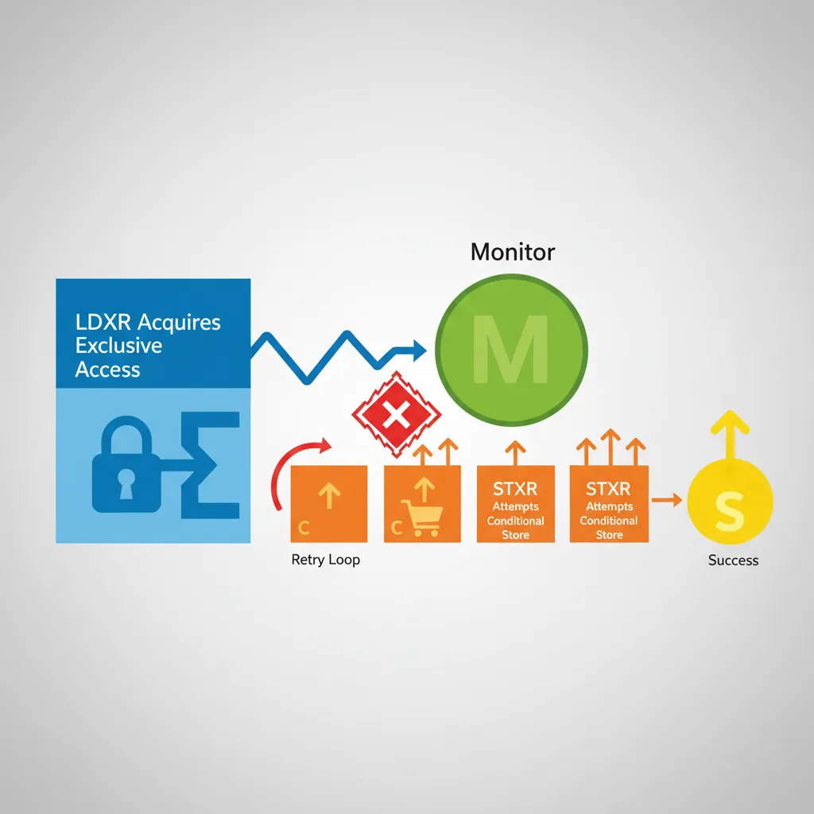
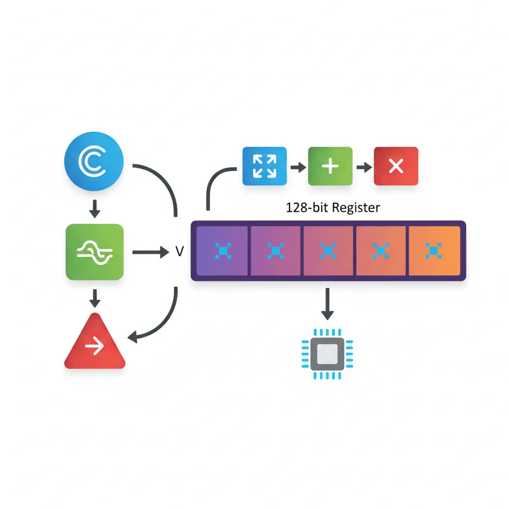

Introduction & When to Use Inline Asm
ARM Assembly Mastery
Architecture History & Core Concepts
ARMv1→v9, RISC philosophy, profilesARM32 Instruction Set Fundamentals
ARM vs Thumb, registers, CPSR, barrel shifterAArch64 Registers, Addressing & Data Movement
X/W regs, addressing modes, load/store pairsArithmetic, Logic & Bit Manipulation
ADD/SUB, bitfield extract/insert, CLZBranching, Loops & Conditional Execution
Branch types, link register, jump tablesStack, Subroutines & AAPCS
Calling conventions, prologue/epilogueMemory Model, Caches & Barriers
Weak ordering, DMB/DSB/ISB, TLBNEON & Advanced SIMD
Vector ops, intrinsics, media processingSVE & SVE2 Scalable Vector Extensions
Predicate regs, gather/scatter, HPC/MLFloating-Point & VFP Instructions
IEEE-754, scalar FP, rounding modesException Levels, Interrupts & Vector Tables
EL0–EL3, GIC, fault debuggingMMU, Page Tables & Virtual Memory
Stage-1 translation, permissions, huge pagesTrustZone & ARM Security Extensions
Secure monitor, world switching, TF-ACortex-M Assembly & Bare-Metal Embedded
NVIC, SysTick, linker scripts, low-powerCortex-A System Programming & Boot
EL3→EL1 transitions, MMU setup, PSCIApple Silicon & macOS ABI
ARM64e PAC, Mach-O, dyld, perf countersInline Assembly, GCC/Clang & C Interop
Constraints, clobbers, compiler interactionPerformance Profiling & Micro-Optimization
Pipeline hazards, PMU, benchmarkingReverse Engineering & ARM Binary Analysis
ELF, disassembly, CFR, iOS/Android quirksBuilding a Bare-Metal OS Kernel
Bootloader, UART, scheduler, context switchARM Microarchitecture Deep Dive
OOO pipelines, reorder buffers, branch predictVirtualization Extensions
EL2 hypervisor, stage-2 translation, KVMDebugging & Tooling Ecosystem
GDB, OpenOCD/JTAG, ETM/ITM, QEMULinkers, Loaders & Binary Format Internals
ELF deep dive, relocations, PIC, crt0Cross-Compilation & Build Systems
GCC/Clang toolchains, CMake, firmware genARM in Real Systems
Android, FreeRTOS/Zephyr, U-Boot, TF-ASecurity Research & Exploitation
ASLR, PAC attacks, ROP/JOP, kernel exploitEmerging ARMv9 & Future Directions
MTE, SME, confidential compute, AI accelUse inline assembly when: you need a single hardware instruction the compiler won't emit (e.g., clz, rbit, dmb); you need precise register placement without function call overhead; or you need compiler-visible effects on memory ordering. Avoid inline asm for anything longer than ~10 instructions — a separate .S file is cleaner, testable, and debuggable.

=r, "memory") are like numbered sticky tabs that tell the publisher exactly which page and line your note references, so it survives any re-layout. Without them, your handwritten wisdom ends up next to the wrong paragraph.
Basic asm() Syntax
// Basic asm — no operands, just instruction string
// Primarily for assembly directives or ultra-simple one-liners
// GCC may reorder or eliminate basic asm blocks — rarely what you want
void disable_irq(void) {
asm("msr daifset, #2"); // Disable IRQ (sets DAIF.I)
}
void enable_irq(void) {
asm("msr daifclr, #2"); // Enable IRQ (clears DAIF.I)
}
// Basic asm with multiple instructions (semicolon or \n separated)
void wfi_sleep(void) {
asm("dsb sy\n\t" // Data sync barrier
"wfi"); // Wait for interrupt
}Extended asm() — Operands & Constraints
Extended asm has the form: asm [volatile] ("template" : [outputs] : [inputs] : [clobbers]). The template uses %0, %1, … as placeholders for operands listed in order: outputs first, then inputs. On AArch64 use %w0 for 32-bit (W-register) access and %x0 for explicit 64-bit.

Output Constraints
#include <stdint.h>
// "=r" — any general-purpose register, write-only output
static inline uint64_t read_cntvct(void) {
uint64_t val;
asm volatile("mrs %0, cntvct_el0" : "=r"(val));
return val;
}
// "+r" — read-write register (input AND output to same register)
static inline uint32_t bit_reverse(uint32_t x) {
asm volatile("rbit %w0, %w0" : "+r"(x));
return x;
}
// "=&r" — early-clobber: output register must not overlap any input
// Required when output may be written before all inputs are consumed
static inline void str_exclusive(uint32_t val, volatile uint32_t *addr,
int *status) {
asm volatile("stxr %w0, %w2, [%1]"
: "=&r"(*status) // =& prevents overlap with %1/%2
: "r"(addr), "r"(val)
: "memory");
}Input Constraints
// "r" — any GP register (input)
// "i" — immediate integer (compile-time constant only)
// "m" — memory operand (produces address for asm use)
// "n" — numeric constant (immediate, no register allocated)
static inline int count_leading_zeros(uint64_t x) {
int result;
asm("clz %0, %1" : "=r"(result) : "r"(x));
return result;
}
// Using "i" constraint for immediate (shift amount must be constant)
static inline uint32_t rotate_right(uint32_t x, int shift) {
// Compiler substitutes literal integer into template at compile time
uint32_t out;
asm("ror %w0, %w1, #%2"
: "=r"(out)
: "r"(x), "i"(shift));
return out;
}
// Tied input (digit = output index): reuse same register
static inline uint32_t set_bit(uint32_t val, uint32_t bit) {
asm("orr %w0, %w0, %w1"
: "+r"(val) // %0: read-write (tied input)
: "r"(1u << bit));
return val;
}Clobbers & Memory
// Clobbers tell the compiler which registers/flags the asm modifies
// WITHOUT expressing them as outputs — so compiler saves/restores them
// "cc" clobber: asm modifies condition flags
static inline int signed_saturate(int x, int limit) {
int result;
asm volatile(
"cmp %1, %2\n\t"
"csel %0, %1, %2, lt" // Select min(x, limit)
: "=r"(result)
: "r"(x), "r"(limit)
: "cc"); // CMP modifies NZCV flags
return result;
}
// "memory" clobber: asm reads/writes memory not named in operands
// Forces compiler to flush/reload all live values around the asm
#define mb() asm volatile("dmb ish" : : : "memory")
#define wmb() asm volatile("dmb ishst" : : : "memory")
#define rmb() asm volatile("dmb ishld" : : : "memory")
#define isb() asm volatile("isb" : : : "memory")
// Combine register + memory clobbers: context switch saves x19-x28 etc.
void switch_context(uint64_t *save_sp, uint64_t *load_sp) {
asm volatile(
"stp x19, x20, [%0, #0]\n\t"
"stp x21, x22, [%0, #16]\n\t"
"stp x23, x24, [%0, #32]\n\t"
"mov %0, sp\n\t" // Save current SP
"mov sp, %1\n\t" // Load new SP
"ldp x19, x20, [sp, #0]\n\t"
"ldp x21, x22, [sp, #16]\n\t"
"ldp x23, x24, [sp, #32]"
:
: "r"(save_sp), "r"(*load_sp)
: "x19","x20","x21","x22","x23","x24","memory","cc"
);
}Memory Barriers via Inline Asm
// Linux kernel barrier pattern (arch/arm64/include/asm/barrier.h style)
#define smp_mb() asm volatile("dmb ish" : : : "memory")
#define smp_wmb() asm volatile("dmb ishst" : : : "memory")
#define smp_rmb() asm volatile("dmb ishld" : : : "memory")
#define dma_wmb() asm volatile("dmb oshst" : : : "memory") // outer shareable
// READ_ONCE and WRITE_ONCE equivalents (prevent compiler reordering)
#define READ_ONCE(x) \
({ typeof(x) __val; asm volatile("" : "=r"(__val) : "0"(x)); __val; })
#define WRITE_ONCE(x, val) \
asm volatile("" : : "r"((typeof(x))(val)) : "memory")
// Acquire/release atomics using LDAR/STLR
static inline uint64_t load_acquire(const volatile uint64_t *addr) {
uint64_t val;
asm volatile("ldar %0, [%1]" : "=r"(val) : "r"(addr) : "memory");
return val;
}
static inline void store_release(volatile uint64_t *addr, uint64_t val) {
asm volatile("stlr %1, [%0]" : : "r"(addr), "r"(val) : "memory");
}Atomic Operations (LDXR/STXR)

// CAS (Compare And Swap) using exclusive monitor
// AArch64 also has ARMv8.1 LSE atomics: CAS, SWP, LDADD (preferred where available)
static inline int atomic_cmpxchg32(volatile int *ptr, int old_val, int new_val) {
int result;
int tmp;
asm volatile(
"1: ldxr %w0, [%2]\n\t" // Load exclusive: result = *ptr
"cmp %w0, %w3\n\t" // result == old_val?
"b.ne 2f\n\t" // No: bail out
"stxr %w1, %w4, [%2]\n\t" // Yes: try store exclusive
"cbnz %w1, 1b\n\t" // Retry if store exclusive failed
"2: clrex" // Clear exclusive if bailed out
: "=&r"(result), "=&r"(tmp)
: "r"(ptr), "r"(old_val), "r"(new_val)
: "cc", "memory"
);
return result; // Returns old value (Linux cmpxchg convention)
}
// ARMv8.1 LSE: preferred on Cortex-A55+, Neoverse, Apple Silicon
// Requires -march=armv8.1-a+lse or target_feature attribute
#ifdef __ARM_FEATURE_ATOMICS
static inline int atomic_cmpxchg32_lse(volatile int *ptr, int old_val, int new_val) {
asm volatile("cas %w0, %w2, [%1]"
: "+r"(old_val)
: "r"(ptr), "r"(new_val)
: "memory");
return old_val;
}
#endifNEON & Compiler Intrinsics from C

// Header: <arm_neon.h> — included automatically with -mfpu=neon or -march=armv8-a
#include <arm_neon.h>
#include <stdint.h>
// Horizontal sum of 4 floats using intrinsics (no inline asm needed)
float sum4(const float *arr) {
float32x4_t v = vld1q_f32(arr); // Load 4 floats into NEON register
float32x2_t lo = vget_low_f32(v);
float32x2_t hi = vget_high_f32(v);
float32x2_t sum = vpadd_f32(lo, hi); // Pairwise add
sum = vpadd_f32(sum, sum); // Final pair add
return vget_lane_f32(sum, 0);
}
// Dot product using FMLA (fused multiply-accumulate)
float dot_product(const float *a, const float *b, int n) {
float32x4_t acc = vdupq_n_f32(0.0f);
for (int i = 0; i < n - 3; i += 4) {
float32x4_t va = vld1q_f32(a + i);
float32x4_t vb = vld1q_f32(b + i);
acc = vfmaq_f32(acc, va, vb); // acc += va * vb (FMLA)
}
return vaddvq_f32(acc); // Horizontal sum (ARMv8.1 addv)
}
// Mixing intrinsics and inline asm for timing (CNTVCT_EL0 not in arm_neon.h)
#include <time.h>
static inline uint64_t read_timer(void) {
uint64_t t;
asm volatile("mrs %0, cntvct_el0" : "=r"(t));
return t;
}AArch32 vs AArch64 NEON Compiler Flags
-mfpu=neon-fp-armv8 — On AArch64, NEON/Advanced SIMD is always available and no special compiler flag is needed. On AArch32 (32-bit ARM mode), you must explicitly enable NEON through the -mfpu flag. The correct value depends on your target architecture:
-mfpu=neon— ARMv7-A NEON (no FP16, no FMA, VFPv3)-mfpu=neon-vfpv4— ARMv7-A NEON with VFPv4 (adds FMA:VFMA.F32)-mfpu=neon-fp-armv8— ARMv8-A AArch32 NEON (adds FP16 conversion, rounding,VMAXNM/VMINNM). This is what you use on Cortex-A53/A72/A75/A76 when compiling 32-bit code.-mfpu=crypto-neon-fp-armv8— Same as above plus ARMv8 cryptography extensions (AES, SHA)
# AArch32 compilation with NEON FMA support (Cortex-A53 in 32-bit mode)
arm-linux-gnueabihf-gcc -O2 -march=armv8-a -mfpu=neon-fp-armv8 -mfloat-abi=hard \
-c neon_dot.c -o neon_dot.o
# The intrinsic vfmaq_f32() maps to VFMA.F32 on AArch32:
# float32x4_t vfmaq_f32(float32x4_t a, float32x4_t b, float32x4_t c);
# AArch32 → VFMA.F32 q0, q1, q2 (VFPv4+ required)
# AArch64 → FMLA v0.4s, v1.4s, v2.4s
# AArch64 — no -mfpu needed; NEON is mandatory
aarch64-linux-gnu-gcc -O2 -march=armv8-a -c neon_dot.c -o neon_dot.o-mfloat-abi=hard flag is equally important on AArch32 — it tells GCC to pass floating-point arguments in VFP/NEON registers (S0–S15, D0–D7) instead of integer registers. Without it, every NEON intrinsic call wastes cycles moving data between integer and SIMD registers. On AArch64, the hard-float ABI is the only option — there is no soft-float AArch64 ABI.
Common Pitfalls & Debugging
- Missing "memory" clobber on barrier macros — compiler reorders C loads/stores around your barrier.
- Missing "cc" clobber when asm sets flags — compiler uses stale condition codes from before the asm block.
- Omitting volatile on asm with side effects — compiler may hoist/sink/eliminate the block.
- Using basic asm for kernel code — GCC is allowed to delete unreferenced basic asm blocks in optimized builds.
- Wrong register width for AArch64 — using
%0in a 32-bit instruction on a 64-bit variable silently generates W-register form or fails to assemble.
asm volatile("" : : : "memory") (a compiler fence) prevents the compiler from reordering loads/stores across it, but the CPU can still execute them out-of-order. For SMP correctness on ARM's weakly-ordered memory model, you need both: the compiler fence AND a hardware barrier instruction (dmb ish). The Linux smp_mb() macro provides both in a single asm volatile("dmb ish":::"memory") statement — the instruction is the hardware barrier, the clobber is the compiler barrier.
Case Study: Linux Kernel's Inline Assembly
Linux arm64 Barrier Macros — From arch/arm64/include/asm/barrier.h
The Linux kernel's arm64 port contains over 200 inline assembly statements across barrier definitions, atomic operations, and context switching. The barrier macros demonstrate every constraint pattern covered in this article:
smp_mb():asm volatile("dmb ish" ::: "memory")— hardware + compiler barrier combined. The"memory"clobber prevents GCC from reordering any C memory operation across this point, whiledmb ishprevents the CPU from doing the same.__cmpxchg_case_##sz: Template-generated LDXR/STXR loops with"=&r"early-clobber on the status register. Before ARMv8.1 LSE atomics, everyatomic_cmpxchg()in the kernel expanded to this pattern.cpu_switch_to()inentry.Scalls to inline asm: Context switch saves callee-saved registers (x19–x28, x29/FP, SP) using STP with explicit register clobber lists, ensuring the compiler doesn't cache any values across a task switch.- READ_ONCE/WRITE_ONCE: Uses an empty inline asm statement with constraints to force the compiler to actually load/store the variable, preventing dead-store elimination or speculative reloading.
Key lesson: The kernel relies on inline asm not for performance but for correctness — expressing hardware semantics (barrier ordering, exclusive monitors, system register access) that C cannot represent. Every clobber and constraint is the difference between a working SMP system and a silent data-corruption bug.
The GCC Extended Asm Origin Story
GCC's inline assembly syntax dates back to the 1980s, when Richard Stallman needed a way to embed PDP-11 and VAX instructions in C code for the GNU system. The original asm() was "basic" — just a string pasted into the output. The constraint system ("=r", "m", clobbers) was added in GCC 2.x to solve a critical problem: register allocation. Without constraints, the compiler had no idea which registers the assembly block used, leading to silent corruption when the compiler reused the same register for a C variable.
ARM support in GCC arrived in the early 1990s (arm-linux target), and the constraint letters were extended for ARM-specific needs. The %w0 / %x0 width modifiers for AArch64 were added with GCC 4.8 (2013) when AArch64 was first supported. Clang adopted GCC's exact syntax for compatibility, making inline asm one of the few areas where both compilers are fully interchangeable.
Hands-On Exercises
Constraint Practice: Bit Manipulation Wrappers
Write three inline assembly wrapper functions in C that use AArch64 instructions the compiler rarely emits:
uint32_t reverse_bytes(uint32_t x)— useREV %w0, %w1with"=r"output and"r"input constraintsint popcount64(uint64_t x)— useFMOV d0, %1; CNT v0.8b, v0.8b; ADDV b0, v0.8b; FMOV %w0, s0(moves to NEON, counts bits per byte, horizontal sum, moves back)uint64_t extract_bits(uint64_t x, int lsb, int width)— useUBFX %0, %1, %2, %3with"i"constraints for the immediate operands
Verify: Compile with aarch64-linux-gnu-gcc -O2 -S and confirm the compiler emitted exactly one instruction per function (no spills, no extra moves).
Spinlock with Acquire/Release Semantics
Implement a ticket spinlock using inline assembly with correct memory ordering:
- Define a
struct spinlock { uint32_t owner; uint32_t next; } spin_lock(): UseLDAXR+ADD+STXRto atomically incrementnextand get your ticket number. Then spin withLDAXRHonowneruntil it matches your ticket.spin_unlock(): UseSTLR(store-release) to incrementowner, releasing the next waiter.- Mark all asm blocks
volatilewith"memory"clobber.
Bonus: Add WFE/SEV hints — WFE in the spin loop (saves power), SEV after unlock (wakes waiters).
Inline Asm vs Intrinsics Benchmark
Compare the performance and code quality of three approaches for a 256-element float array sum:
- Pure C loop:
for (int i = 0; i < 256; i++) sum += arr[i];compiled with-O2 -march=armv8-a - NEON intrinsics: Use
vld1q_f32+vaddq_f32with 4 accumulators, thenvaddvq_f32for horizontal reduction - Inline assembly: Hand-written NEON using
ld1 {v0.4s-v3.4s}, [%1], #64withfaddaccumulation
Measure: Use CNTVCT_EL0 (from the timer reading inline asm earlier) to capture minimum cycles over 10,000 iterations. Compare the -S output instruction counts. On modern Cortex-A cores with autovectorization, approach 1 should match approach 2 — demonstrating when inline asm is unnecessary.
Conclusion & Next Steps
We covered inline assembly for ARM: basic vs extended asm syntax, output/input/clobber constraints with =r, +r, =&r, r, i, m and cc/memory, atomic LDXR/STXR loops and LSE CAS, memory barrier macros, LDAR/STLR acquire-release patterns, and NEON intrinsics as a higher-level alternative. Through the Linux kernel case study, we saw how production code uses every constraint pattern for correctness on SMP systems — and through the exercises, you practiced writing constraint-correct wrappers, implementing a ticket spinlock, and benchmarking inline asm against compiler autovectorization.